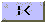
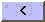
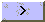
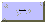
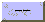
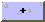
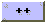

| Button | Hotkey | Action |
|---|---|---|
 |
(Alt-Home) | Go to the first shifter point |
 |
(Alt-Up) | Go to the previous shifter point |
 |
(Alt-Down) | Go to the next shifter point |
| (Alt-End) | Go to the last shifter point | |
 |
(Alt-Left) | Moves the point one tick earlier |
 |
(Alt-Shift-Left) | Moves the point 10 ticks earlier |
 |
(Alt-Right) | Moves the point one tick later |
 |
(Alt-Shift-Right) | Moves the point 10 ticks later |
| (Alt-B) | Show/hide boxes |
Copyright © 2001 Fortna Inc. All rights reserved.